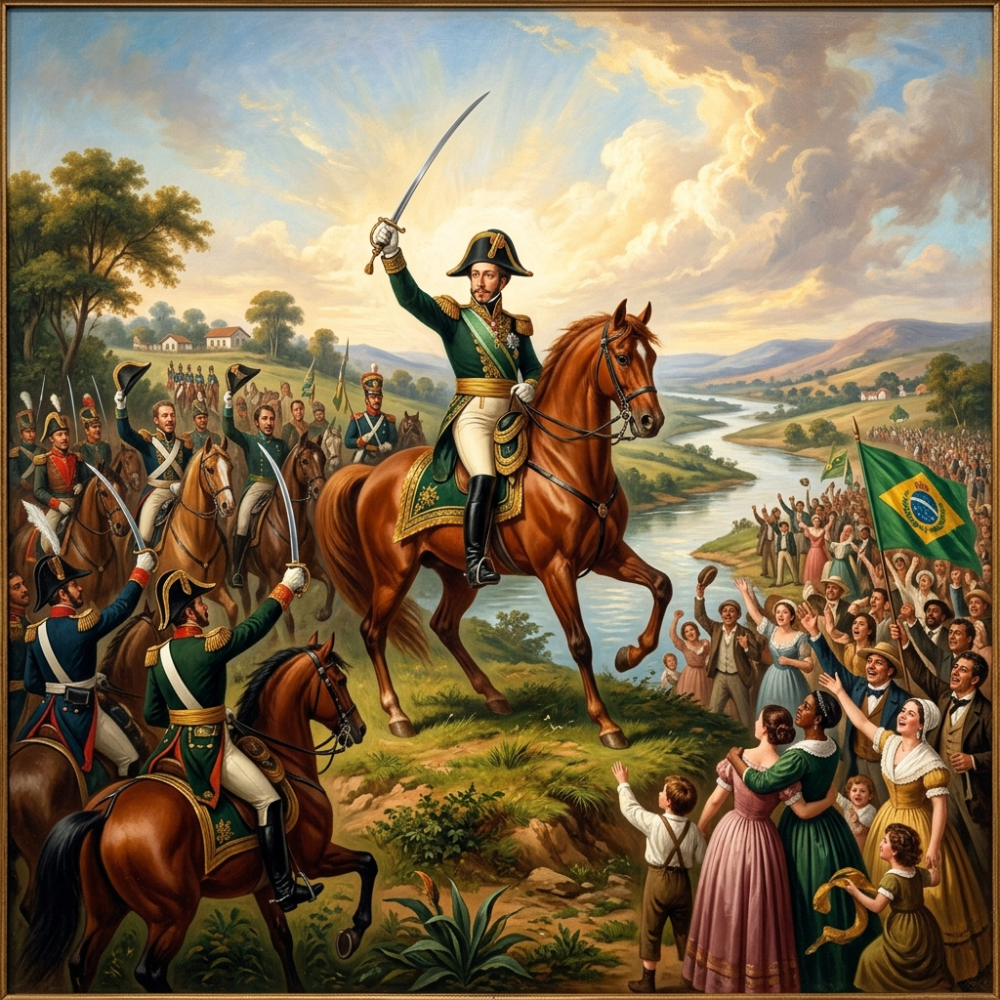

Simulador de História Alternativa do Brasil
Nota: Seus dados serão salvos localmente neste navegador.
Bem-vindo, Governador!
Selecione o período inicial da sua simulação:
Você assume o governo geral do Brasil. Seu objetivo é desenvolver a economia, expandir a infraestrutura e manter a estabilidade social (baixo descontentamento) sem falir o Tesouro Nacional.
Cada região possui PIB, Taxa de Imposto e Nível de Revolta específicos. Você pode investir em:
Investir custa dinheiro (Contos de Réis), que aumenta conforme o nível atual da melhoria. Além disso, cada infraestrutura construída gera um custo anual de manutenção. O descontentamento local aumenta se você cobrar impostos muito altos ou se a região sofrer invasões.
Ao avançar os anos, eventos surgirão. Suas escolhas geram consequências imediatas ou de longo prazo, alterando o rumo da história brasileira de forma ucrônica (fictícia) ou histórica. Resista a invasões, decida leis e guie o país rumo ao progresso!
Visão geral de PIB, impostos e descontentamento regional.
| Território | PIB Local | Imposto | Revolta | Status |
|---|
Acompanhe o quanto sua linha temporal está se afastando da história real do Brasil.
| Ano | Evento | Sua Escolha | Tipo |
|---|
| Métrica | História Real | Sua Nação | Diferença |
|---|
Enciclopédia in-game com informações históricas reais do Brasil.

Os Bandeirantes são exploradores que adentram o interior do Brasil em busca de riquezas e novos territórios. Financiar essas expedições custará $50 Contos agora, mas abrirá caminho para o valiosíssimo Ciclo do Ouro nas próximas gerações.
⚠️ Esta é uma ação única e irreversível por era. Após financiadas, as expedições não podem ser canceladas.
Você está prestes a reiniciar a simulação atual. Tenha em mente as seguintes consequências:
Deseja realmente prosseguir?
Esta ação é irreversível e irá apagar:
Deseja realmente limpar todos os dados?